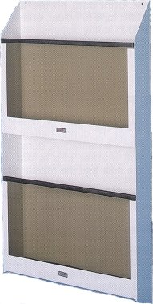

Wolf X-Ray Utility File
Wolf X-Ray Utility File
Easily wall mounted via 2 keyholes, the X-Ray Utility File's generous size will hold your largest cassettes, films, jackets,
files or whatever else you need to keep conveniently at hand.
The Wolf X-ray Utility File is manufactued of steel with a baked on white finish. The individual bins have plexiglas front panels
that allow you to see at a glance what is in them.
Uniquely our X-Ray Utility File has a rubber mat on the bottom of the bin that cushions anything placed in it. This means no more
damage to expensive cassettes. The X-Ray Utility File is available in single and double tiers. Dimensions and stock numbers are
shown below.

| Stock # | Configuration | Dimensions | Price |
|---|---|---|---|
| 21609 | Single | 22-1/4"W x 22-3/8"H x 5-1/4"D | $246.92 |
| 21610 | Double | 22-1/4"W x 43"H x 5-1/4"D | $352.92 |